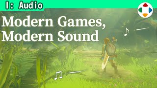
速览
常听到这样的疑问：以前的游戏音乐很好记、哼起来也开心，现在的游戏音乐好莱坞化了，听不明白，响着跟没响一样，不太有意思。好，明白了，那就给现在的游戏放红白机音乐看看——吵吧？不，某种意义上也许挺有趣。随着画面进化、从眼睛进来的信息量增多，音乐太突出就变得不合适了。例如写实画面也需要环境音：拂动草叶的风、踩碎泥土的声音、装备「咔嚓」碰响的声音……构成要素太多，必须考虑各自的存在感。不过确实，他也觉得一部作品制作的曲子太多了——可能会被说「你还好意思说」。作为一般游戏的话题，曲子漫无边际地变多，就记不住、也难嗨，所以适度控制、善加运用比较好。他常做的是：做一首主题曲那样的曲子，把它的改编版用于各种场面——记得住主旋律的曲子更有效果。这很依赖游戏内容，但无论如何，按贴合玩家情感的方式来做比较好。
1. 常见的疑问 0:03
以前的游戏音乐很好记、哼起来也开心；现在的游戏音乐好莱坞化了，响着跟没响一样，不太有意思。
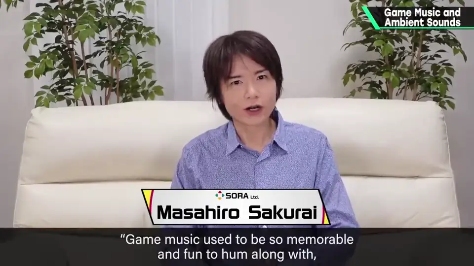
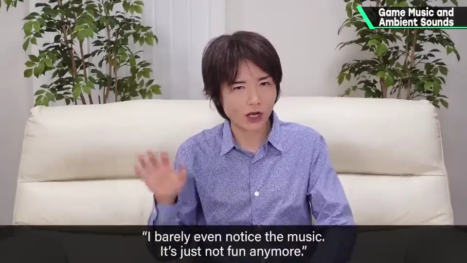
2. 给现代游戏配红白机音乐 0:19
好，那就给现在的游戏放红白机音乐看看：
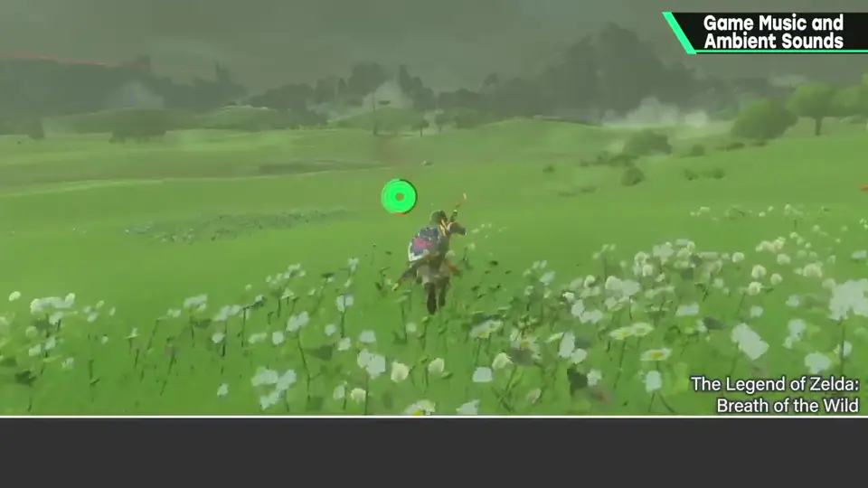
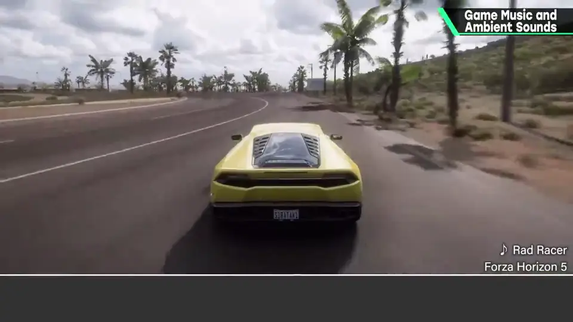
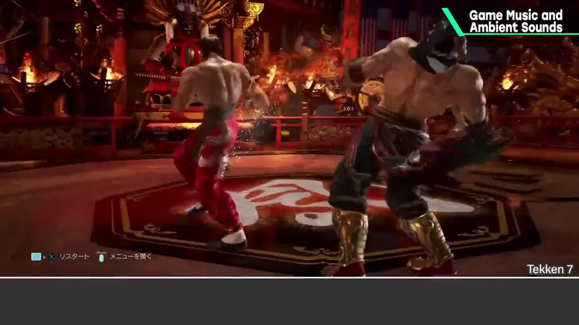
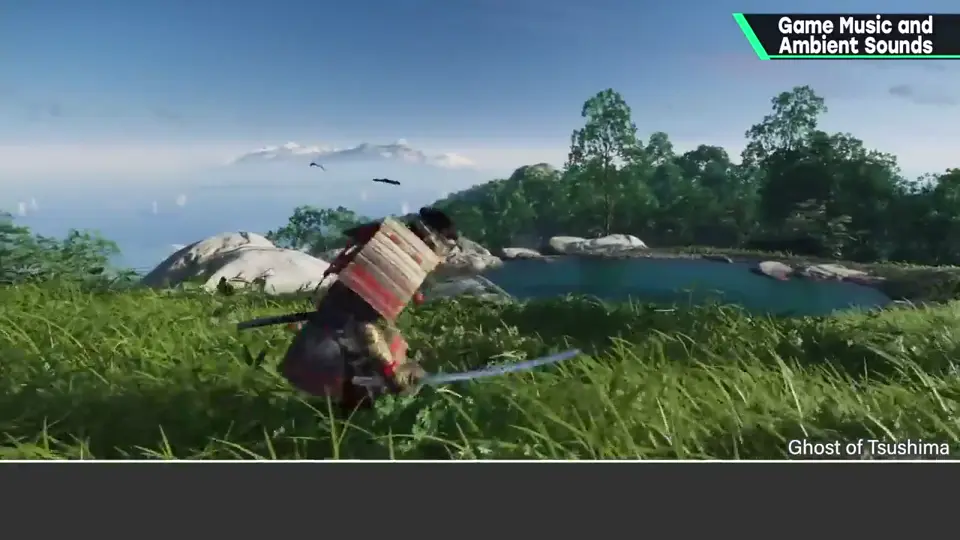
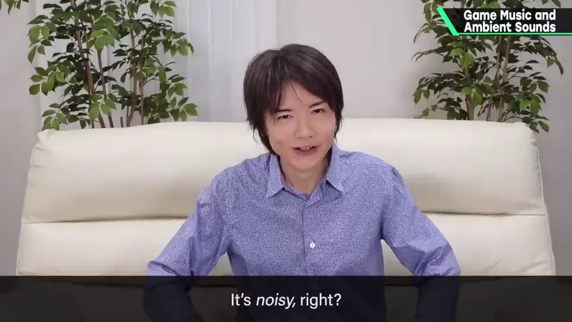
吵吧？不，某种意义上也许挺有趣。
3. 视觉信息与环境音 1:25
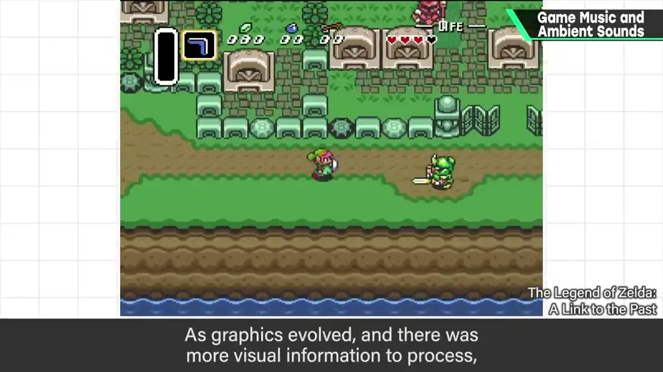
例如写实画面也需要环境音：拂动草叶的风、踩碎泥土的声音、装备「咔嚓」碰响的声音……
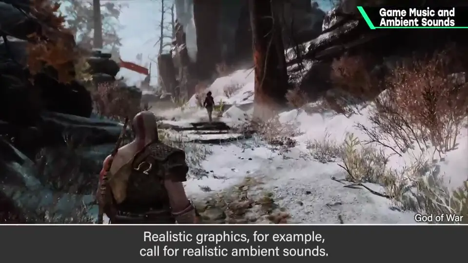
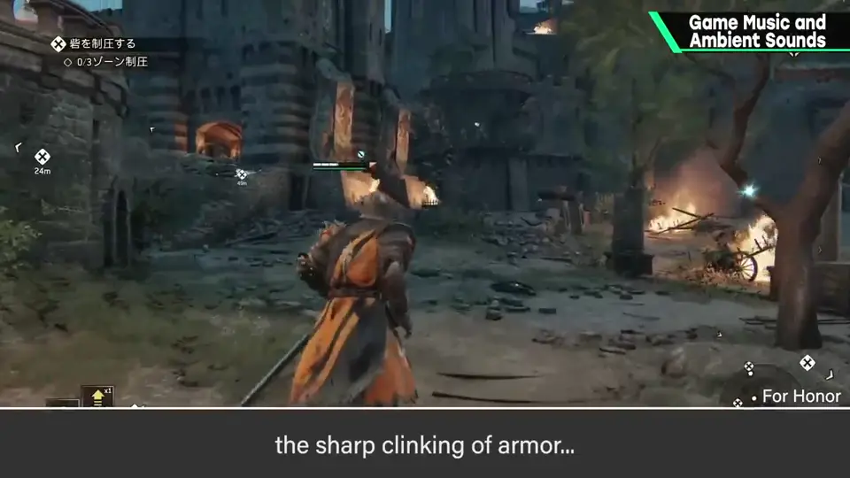
构成要素太多，必须考虑各自的存在感。
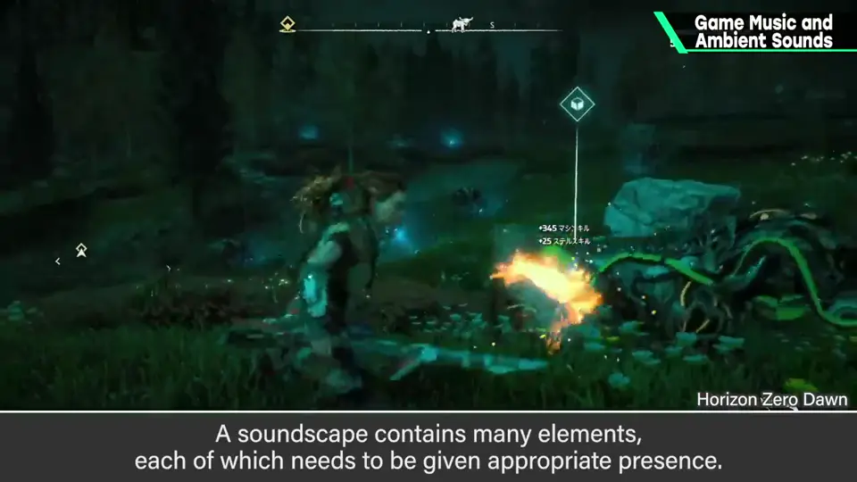
4. 但曲子确实太多 1:52
不过确实，他也觉得一部作品制作的曲子太多了——可能会被说「你还好意思说」。
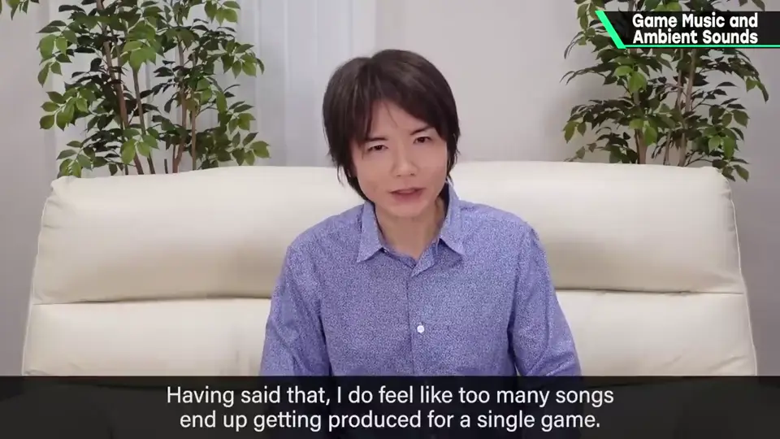
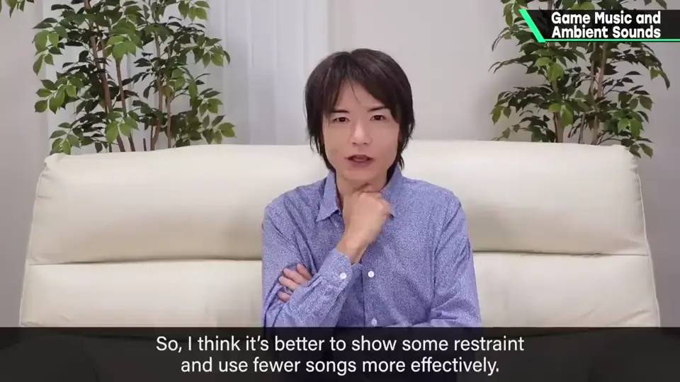
5. 主题曲 + 改编 2:21
他常做的是：做一首主题曲那样的曲子，把它的改编版用于各种场面。记得住主旋律的曲子更有效果。
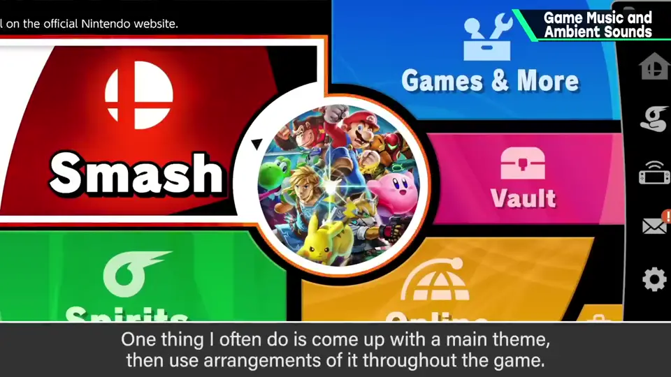
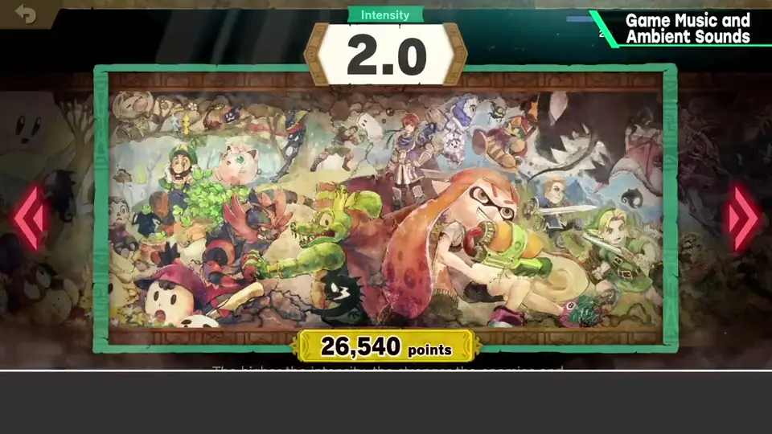
这很依赖游戏内容，但无论如何，按贴合玩家情感的方式来做比较好。
自测题
1. 为什么现代游戏音乐不那么突出？
画面进化、视觉信息增多，写实画面还需要大量环境音，音乐太突出就不合适。 1:30
2. 曲子太多有什么问题？
记不住、难嗨。 2:10
3. 樱井常用的音乐策略是什么？
做主题曲，再把改编版用于各种场景。 2:25